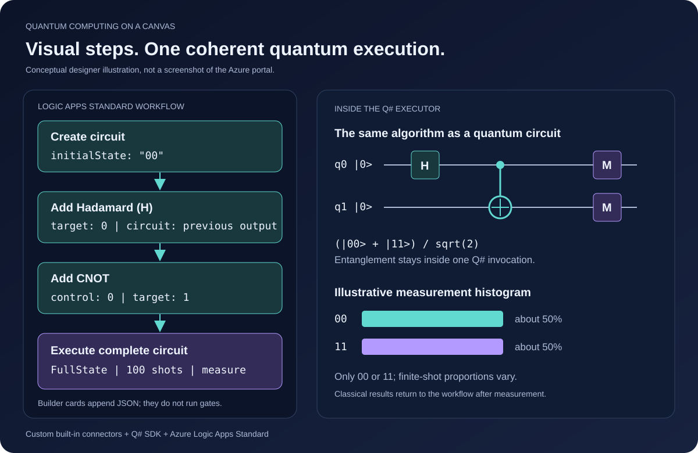
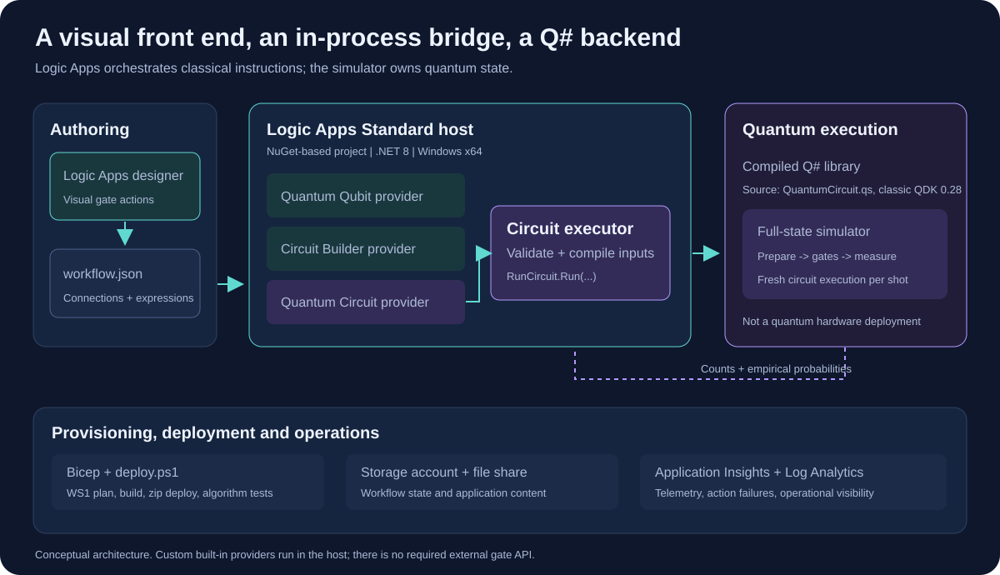
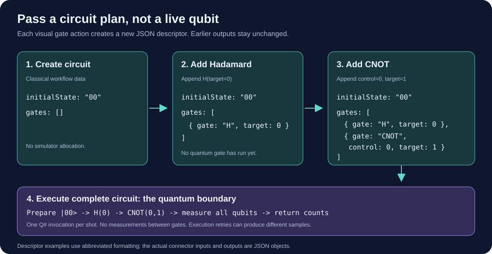
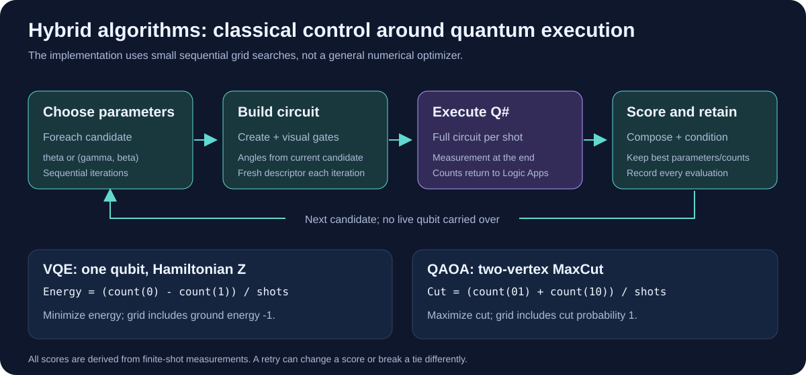

1. The missing layer: a workflow canvas for quantum ideas
Q# expresses quantum programs in code: allocate qubits, prepare states, apply operations and measure results. That is a powerful foundation, but it is not the same experience as arranging an algorithm on a workflow canvas. An integration developer already familiar with Azure Logic Apps might prefer to add a Hadamard step, connect a CNOT step, configure the operands and inspect the resulting computation as a sequence of visual actions.
The opportunity is to place a visual authoring layer above Q#. Azure Logic Apps supplies the existing designer, connectors, expressions, branching, iteration and orchestration. Q# supplies the actual quantum operations. Custom built-in connectors provide the bridge between those two worlds.
The governing idea is simple: build the circuit visually, then execute it quantum-mechanically as one unit. The canvas describes the algorithm; it does not distribute a live quantum state among workflow actions.

2. From a single X gate to a coherent circuit
The project started with Pauli X, the quantum counterpart of NOT on computational-basis states. An early version exposed X as a dedicated operation and passed a JSON qubit descriptor between connectors. That descriptor was only classical data, not a live Q# qubit; independently executing and measuring each gate could not preserve a superposition or entanglement.
The standalone X operation and logical-qubit connector have now been removed. X is represented by the same instruction as every other gate: the Circuit Builder's addX action appends {"gate":"X","target":0} to an immutable circuit description.
The XGateDemoWorkflow demonstrates the shared path: create a circuit, append X, then call runCircuit. Q# allocates a register per shot, prepares it, applies the ordered gates and only then measures and resets the qubits. Coherence is maintained inside that complete invocation, not across Logic Apps actions.
This structure generalizes the original X example without adding an X-specific runtime surface. To change an algorithm, chain different visual gate actions; the executor and Q# entry point remain the same.
3. The implementation: two providers and a Q# backend
The solution uses custom built-in service providers for Logic Apps Standard. These are .NET WebJobs extensions loaded in the workflow host, rather than managed HTTP custom connectors registered against an external API.
| Component | Responsibility |
|---|---|
QuantumCircuitBuilderServiceOperationProvider | Exposes Create circuit, 15 gate actions, named measurement, reset, and IF/ELSE. Validates and appends instructions without running the simulator. |
QuantumCircuitServiceOperationProvider | Exposes the generic Run a quantum circuit action, including named classical results and terminal measurements. |
QuantumCircuitExecutor | Validates ordered instructions, expands reusable operations, maps measurement-dependent gates into Q# arguments, runs shots and aggregates results. |
QuantumCircuit.qs | Provides one Q# dispatcher that measures, resets, branches on stored Results, and finally measures the register. |
QuantumCircuitStartup | Registers both providers through dependency injection and the Logic Apps service-provider registry. |
The providers expose operation manifests with typed schemas and designer-friendly labels. Their connections are declared in connections.json. The builder uses format=instruction-list-v1; the execution connection requires simulator=FullState, its only supported backend. Neither requires credentials or an X-specific connection. Logic Apps requires nonempty parameterValues; an empty object causes MissingServiceProviderConnectionParameterValues before circuit execution.
The Q# source is compiled during the build. At runtime, the executor calls generated .NET operation classes such as RunCircuit.Run(...). The host needs the compiled assembly and simulator libraries, not a Q# source interpreter.

4. Turning quantum gates into visual steps
A raw circuit array is compact, but writing it by hand does not deliver the visual experience. The Circuit Builder makes each gate its own designer action: Hadamard; X, Y and Z; S and T with their adjoints; CNOT; controlled Z; SWAP; Toffoli; and Rx, Ry and Rz rotations. It also exposes named measurement, reset, and a designer action for adding an IF/ELSE block keyed to an earlier measurement.
Each action takes the preceding circuit output and gate-specific parameters. Target and control indices are zero-based; rotations use radians. The left-most character of the initial bit string represents qubit 0. A builder action returns a new descriptor rather than mutating its input.
Reusable operations add defineOperation and callOperation for named gate templates with typed Int/Double inputs. Calls expand into primitive gates before one coherent Q# run; templates remain gate-only. The circuit stream supports named MEASURE, RESET, and one-level IF/ELSE over an earlier measurement. These instructions execute inside one Q# invocation per shot, not as separate connector calls on live qubits.
Terminal results remain in the Boolean measurements arrays. Mid-circuit values appear in classicalMeasurements as named booleans, where Q# Result.Zero/Result.One map to false/true. Branches may contain gates or gate-template calls, but not nested conditions, measurements, resets, loops, or arbitrary Q# statements.
{
"initialState": "00",
"gates": [
{ "gate": "H", "target": 0 },
{ "gate": "CNOT", "control": 0, "target": 1 }
]
}In VisualQuantumCircuitWorkflow, the steps are Create circuit, Hadamard on qubit 0, CNOT from 0 to 1 and Execute complete circuit. The Hadamard action receives @body('Create_circuit')?['circuit']. The CNOT action receives the Hadamard output. Finally, the executor takes initialState and gates from the completed descriptor.
This Bell circuit creates (|00> + |11>)/sqrt(2). Measurement produces correlated outcomes: only 00 or 11, with equal theoretical probabilities. A finite sample need not split exactly in half.

MeasurementControlWorkflow follows a deterministic reference Q# program: it records 0, flips and records 1, resets the measured qubit, then uses both the true and else branches. Every shot finishes in |00>. The named classical results remain visible alongside the terminal sample, showing that feed-forward does not require persisting a live qubit in Logic Apps.
Immutability also matters operationally. A retry of an append action with the same input produces the same circuit rather than duplicating an instruction. Two branches can safely derive separate circuit descriptors, but these workflow graph branches are not automatically merged. Circuit-level IF branches instead live inside the ordered descriptor and execute against Q# measurement values.
Builder and executor share validation. An out-of-range index, a repeated control/target operand, an unknown or forward measurement reference, an unsupported nested condition, an invalid angle or an oversized circuit fails before simulation. Execution retries remain different from builder retries: fresh quantum measurements can produce different samples.
5. Algorithm demonstrations on the canvas
The solution includes ten original algorithm workflows built from explicit visual gate actions, plus teleportation with mid-circuit feed-forward, a fixed factoring-15 Shor circuit and an Azure Quantum Bell workflow. These are intentionally small fixed instances, not turnkey algorithms for arbitrary inputs, oracles or problem sizes. Their HTTP triggers accept an optional shots value, defaulting to 100.
| Workflow | Implemented example |
|---|---|
TeleportationWorkflow | Teleports |+> using Bell-basis measurement, reset and X/Z corrections; an X-basis check confirms every shot. |
DeutschJozsaWorkflow | A two-input balanced parity oracle; input measurements are 11 and the result identifies a balanced function. |
BernsteinVaziraniWorkflow | A three-bit secret 101 encoded through phase kickback. Final input bits recover 101; the measured ancilla can vary. |
GroverWorkflow | A two-qubit search with marked state 11 and one oracle/diffusion iteration. Final measurement finds 11. |
GroverThreeQubitWorkflow | Three-qubit visual search from 000, marking 111 with H-Toffoli-H and applying one diffusion iteration. Ideal marked-state probability is 78.125%, rather than 100% for the two-qubit example. |
AzureQuantumBellWorkflow | Builds H(0)-CNOT(0,1) with the existing visual builder and sends it through a separate Python backend, which selects Quil, IonQ circuit JSON, or Quantinuum OpenQASM from the configured Azure Quantum target; returns the cloud job ID and normalized counts. |
HybridProductionSchedulingWorkflow | Compares a greedy baseline with a four-qubit, one-layer QAOA candidate for assigning two jobs to two slots; keeps the baseline unless a feasible sampled QAOA schedule has lower cost, then returns the result for planner approval. |
QuantumFourierTransformWorkflow | QFT on 01 plus a separate, freshly prepared QFT/inverse-QFT round trip. Forward Z outcomes are uniform in expectation; the round trip recovers 01. |
QuantumPhaseEstimationWorkflow | Two counting qubits estimate phase 1/4 of S on eigenstate |1>. The counting register returns 01. |
Shor15Workflow | Fixed factoring example for 15 with base 2: controlled modular multiplication and inverse QFT recover order 4 from informative phases, then yield factors 3 and 5; uninformative samples report inconclusive. |
SimonWorkflow | The two-bit period 11 of the parity oracle. Nonzero measured equation 11 recovers the period for this instance; an uninformative finite sample reports inconclusive. |
SuperdenseCodingWorkflow | A Bell pair, fixed encoded message 11, and a decoding circuit that recovers 11. |
GhzWorkflow | Three-qubit GHZ preparation. Final measurements contain only 000 or 111. |
VqeWorkflow | A single-qubit Hamiltonian Z with an Ry ansatz and a three-candidate classical parameter sweep. The grid includes ground energy -1. |
QaoaWorkflow | Depth-one QAOA for two-vertex MaxCut with three candidate parameter pairs. The grid includes cut probability 1. |
Controlled phases in QFT and phase estimation are decomposed into supported Rz and CNOT gates. Unlike the deterministic two-qubit Grover example, one three-qubit iteration finds 111 with probability 25/32; all other outcomes remain possible. Simon's classical recovery is specialized to its two-input example; it is not a general solver for systems over GF(2). GHZ is a state-preparation demonstration rather than a computational algorithm, but it provides a clear visual example of multi-qubit entanglement.
6. VQE and QAOA: where workflow orchestration adds value
Hybrid algorithms show why a workflow engine can be more than a diagramming surface. For each candidate, Logic Apps builds a fresh circuit, executes it, computes an objective from the counts and retains the best observed result. A sequential Foreach avoids races when updating shared best-score variables.
For the VQE example, the ansatz is Ry(theta)|0> and the Hamiltonian is Z. The estimated energy is (count(0)-count(1))/shots. The workflow evaluates theta = 0, pi/2 and pi, minimizing the score.
For QAOA, the cost layer is CNOT - Rz(-gamma) - CNOT; the mixer applies Rx(2 beta) to both qubits. The objective is (count(01)+count(10))/shots, the probability of cutting the single edge. The workflow maximizes that score.

Both workflows return evaluations, best parameters, best objective and the associated counts. They demonstrate a small grid search, not a general numerical optimizer. Finite-shot noise can affect scores and ties. A production variational application would need a more capable optimizer, convergence criteria and an execution-budget policy.
7. Packaging and deploying the visual runtime
The application is a NuGet-based Logic Apps Standard project. It references the workflow runtime package and connector project rather than relying on the standard extension bundle. Published output includes workflow definitions, connection configuration, startup metadata, compiled Q# operations and native simulator dependencies.
main.bicep provisions a Windows Workflow Standard plan, a Logic App site, a storage account and content share, Application Insights and Log Analytics. The deployment sets the .NET 8 in-process host configuration and uses a 64-bit worker. Windows x64 is selected for the classic full-state simulator dependency.
# Run from the solution root after selecting your Azure subscription.
az login
.\deploy\deploy.ps1 -ResourceGroup rg-quantum-circuit -Location westeuropeThe deployment script first compares the circuit executor with independent native Q# reference programs and checks modular multiplication for the Shor 15 example, then provisions infrastructure, publishes and zip-deploys the app. Cloud smoke tests exercise the X-gate path, six beginner lessons, reusable operations, measurement/reset/conditional feed-forward, teleportation, the visual Bell workflow, ten original algorithms, three-qubit Grover at 1,000 shots and Shor 15. The separate Azure Quantum workflows require a separately deployed Python backend, a workspace, a compatible Rigetti, IonQ or Quantinuum target and configured identities; the scheduling pilot also requires a configured MES writeback endpoint after planner approval.
The X demo test checks that the workflow builds an X instruction with the shared builder and that every shot from |0> measures 1. Bell and algorithm checks do not insist on an exact 50/50 split in probabilistic experiments. The original runCircuit operation remains the local Q# full-state simulator; the Azure Quantum operation calls a Python Function App that routes to native Quil, IonQ circuit JSON or Quantinuum OpenQASM submission and returns a remote job ID and normalized results.
The production-scheduling example is intentionally only a two-job/two-slot pilot: Logic Apps accepts an ERP/MES-normalized cost matrix, compares a greedy schedule with one-layer QAOA sampled on four qubits, and returns a feasible improvement for human approval. It does not model full manufacturing constraints, and the approval workflow writes back only to a separately configured generic MES endpoint.
For local development, the same application can run with Azure Functions Core Tools and Azurite. Keep callback URLs secret because they contain SAS signatures, and exclude local settings and build artifacts from source control. Provisioned cloud resources incur Azure charges; this article does not imply that resources have already been deployed.
8. What this architecture does not promise
A universal gate set is not the same as an unrestricted quantum platform. The current circuit action caps execution at 20 qubits, 256 instructions and 1,000 shots. These are application limits, not fundamental Q# limits. The full-state simulator's memory grows exponentially with the number of qubits.
Initial states must be computational-basis bit strings; other states can be prepared using gates. Reusable templates accept typed Int/Double inputs but are gate-only and cannot call nested operations. The simulator circuit stream supports up to 32 named measurements and one-level IF/ELSE blocks referencing earlier results; branches may contain only unitary gates or reusable gate calls. Nested conditions, branch-local measurement/reset, loops, and arbitrary classical/Q# statements are still unsupported. Each shot is a separate execution; there is no persistent quantum session.
Consequently, general teleportation with classical feed-forward, adaptive error correction and practical Shor factoring are outside its scope. QFT and phase estimation are valuable building blocks, but their presence does not constitute a complete factoring implementation.
Executing these circuits on a classical simulator also does not demonstrate a practical quantum speedup. The value of the project is visual authoring, transparent orchestration and a clean separation between classical control and coherent circuit execution.
9. The bigger idea
A visual quantum designer does not have to be a completely new application. An existing workflow designer can provide the canvas, while a circuit descriptor acts as a small intermediate representation and Q# supplies the execution semantics.
The essential design choice is to avoid executing every visual gate independently. Visual steps construct the plan; one executor owns the quantum state. That separation turns the original X-gate example into a reusable educational and integration-oriented platform for expressing quantum circuits, observing classical results and exploring hybrid algorithms.
Future extensions could add nested reusable operations, broader Q# parameter types, branch-local measurement/reset, loops and richer classical state, explicit optimization services and a remote quantum execution backend. They should preserve the same boundary: workflow history is classical data, while coherence belongs to the quantum runtime.